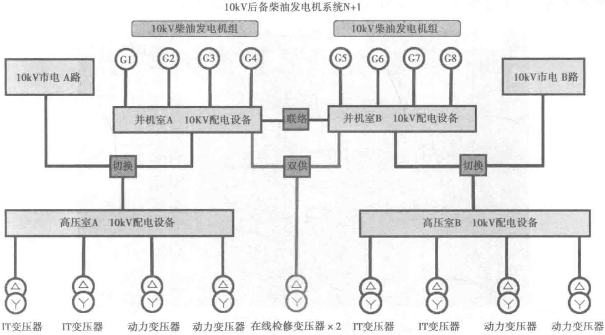

需要。
- 系统设置可监测A、B二并机母线间的联络开关状态，如果该开关状态为分闸状态，则系统只允许并保持A、B各自独立运行。
- 并机控制系统具备断电自启动、自动投入、自动加载和自动卸载、自动负载均分、负载优先级控制、市电切换管理系统、系统智能监控、机组测试控制等功能。
- 发电机组故障与报警信息包括但不限于电压过高/低、频率过高/低、超速、高水温、低润滑油压力、冷却液位低、差动保护、接地故障、蓄电池电压过高/低等等。
- 供油管道采用双环路设计。从主油罐到各个机组日用油箱的储油罐、输送通道、供油泵、供储油控制系统等均具备并行维护/容错能力。
- 油罐储油量在无外部支援情况下满足发电机组大于12h带载连续运行，并有紧急供油协议作为后继可靠保障。
- 日用油箱设置高高位、高位、低位、低低位四段式油位监控和报警，当任意一个日用油箱油位低时，自动开启供油电磁阀和启动供油泵，油位至高位时自动关闭供油电磁阀。当全部日用油箱的柴油全部到达高位时，则自动停止供油泵的运行。如果某一供油泵运行故障，则自动启动备用供油泵。
模块楼10kV市电/柴油发电机供切换电示意如图10-6所示。

（2）系统的可靠性
- 本项目采用进口柴油发电机组，满足国际及国内相关标准。
- 该机组具有良好的启动性能，配有发动机缸套水加热装置，在备用状态时保持缸套